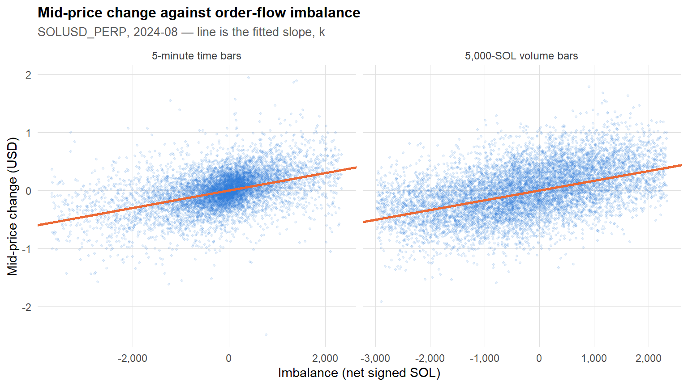
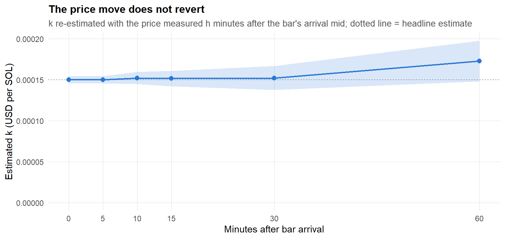
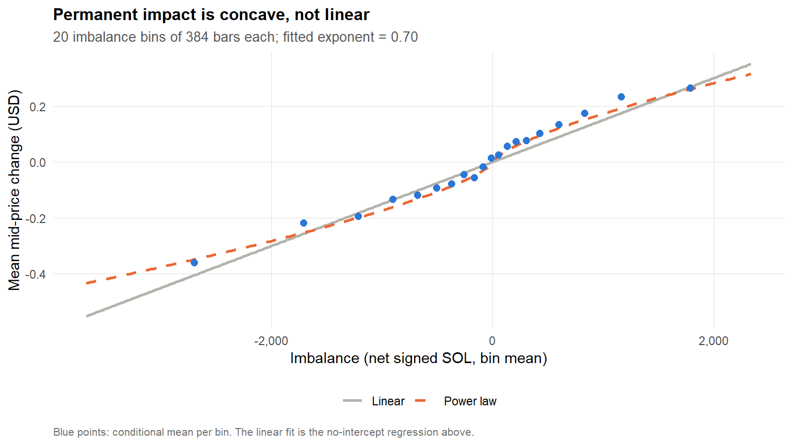
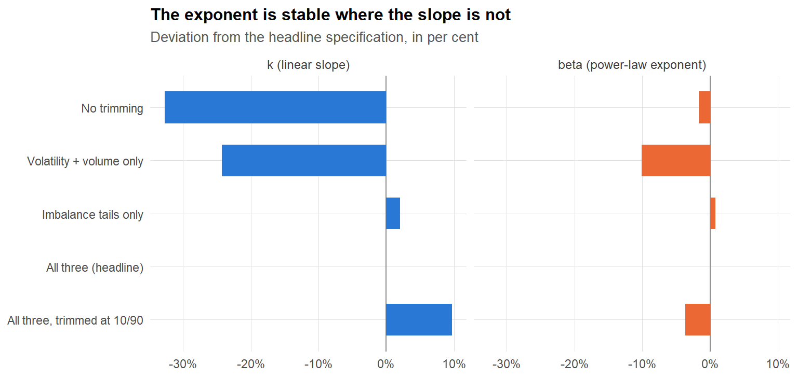

SYMBOL <-"SOLUSD_PERP"MONTH <-"2024-08"BAR_MINUTES <-5# time-bar lengthVOL_BAR_SIZE <-5000# volume-bar size, in base_qty (SOL)VOL_WINDOW <-15# bars in the rolling volatility estimate used for filteringTRIM_Q <-0.95# quantile at which volatility, volume and imbalance are trimmedN_BINS <-20# imbalance quantile bins for the conditional meanHAC_LAG <-12# Newey-West lag (1 hour at 5-minute bars)
Introduction
To compute trading curves and trading envelopes, market impact and execution costs are needed. This notebook estimates the permanent impact parameter \(k\); the companion notebook ../execution_cost/execution_cost_function.qmd estimates the temporary impact parameters from the same data.
The mid-price of the asset is modelled by the process
\[
d S_t = \sigma \, d W_t + k\, v_t \, dt,
\]
where \(\sigma\) is the arithmetic volatility and \(k \ge 0\) is the parameter governing permanent market impact. Integrating the drift over a bar gives
so regressing a bar’s mid-price change (price_diff) on its net signed volume (imbalance) recovers \(k\) as the slope. The regression is run without an intercept, since the model carries no drift term.
The distinction between the two impact parameters is what each one is measured against, and it matters for how the estimate is built:
Permanent impact (\(k\), here)
Temporary impact (companion notebook)
What moves
the mid-price itself
the execution price relative to the touch
Measured over
a bar of many trades
a single marketable order
Persists?
yes, by definition — and this is tested below
no, it decays as the book refills
Two things are worth stating up front, because they shape the notebook. First, permanence is an assumption in the model above, and an assumption that can be checked: Does the impact actually persist? does so directly. Second, the model asserts that impact is linear in order flow, and Is impact linear in imbalance? shows that it is not — which turns out to explain why the estimate of \(k\) is sensitive to the cleaning choices.
Data
We use one month (2024-08) of Binance SOLUSD_PERP perpetual futures data: tick-level trades (individual executions, signed by taker side) and bookTicker (best bid/ask snapshots), from which the mid-price process is reconstructed. Only the three bookTicker columns needed are read, since the raw file is several gigabytes.
For each trade we attach the most recent mid-price observed before it (pre_mid) and the first mid-price observed after it (post_mid), so that the difference between the two isolates the price move associated with that trade (or a bar of trades) net of unrelated mid-price drift.
Non-equi join of trades to the surrounding mid-prices
setkey(bookTicker, transaction_time)trades[, pre_mid := bookTicker[trades, on = .(transaction_time < time), mult ="last", .(mid_price)]$mid_price]trades[, post_mid := bookTicker[trades, on = .(transaction_time > time), mult ="first", .(mid_price)]$mid_price]
The taker side signs the flow: is_buyer_maker == TRUE means the maker was the buyer, so the taker was selling.
Bars are constructed two ways, to check that the estimate of \(k\) is not an artifact of the sampling scheme: fixed 5-minute time bars, and volume bars that close every 5,000 units of base_qty traded. Both use the same aggregation, so it is written once and called twice.
Bar aggregation
make_bars <-function(bin_id) { b <- trades[, .(imbalance =sum(signed_qty),base_qty =sum(base_qty),n_trades = .N,pre_mid_price =first(pre_mid),post_mid_price =last(post_mid) ), by = .(bin = bin_id)]# Explicit ordering: the rolling volatility below assumes chronological order,# and relying on the grouping to deliver it is an implicit dependency.setorder(b, bin) b[, price_diff := post_mid_price - pre_mid_price] b[, std_dev :=rollapply(pre_mid_price, VOL_WINDOW, sd, fill =NA, align ="right")] b[]}bars_time_all <-make_bars(floor_date(trades$ts, sprintf("%d minutes", BAR_MINUTES)))bars_volume_all <-make_bars(floor(trades$cum_base_qty / VOL_BAR_SIZE))
The 5-minute grid turns out to be complete — every one of the 8,928 bins in the month contains at least one trade, which matters for the decay test below, since that shifts the bar series forward in time and would otherwise skip over gaps.
Data cleaning
Three filters are applied. The top 5% of rolling volatility (std_dev) and the top 5% of traded volume (base_qty) are dropped, to exclude bars dominated by news or liquidation events. The top and bottom 5% of imbalance are dropped to limit outlier influence on the OLS fit.
Filtering
apply_filters <-function(b, q = TRIM_Q) { cut_sd <-quantile(b$std_dev, q, na.rm =TRUE) cut_qty <-quantile(b$base_qty, q, na.rm =TRUE) cut_hi <-quantile(b$imbalance, q, na.rm =TRUE) cut_lo <-quantile(b$imbalance, 1- q, na.rm =TRUE) b[!is.na(std_dev) & std_dev <= cut_sd & base_qty <= cut_qty & imbalance <= cut_hi & imbalance >= cut_lo]}# Note the separate names: apply_filters is deliberately not applied in place.# Overwriting the source table would make re-running this chunk re-trim an# already-trimmed sample, with the quantiles recomputed on the smaller set.bars_time <-apply_filters(bars_time_all)bars_volume <-apply_filters(bars_volume_all)
NoteA filter that was doing nothing
An earlier version of this notebook also dropped bars with abs(imbalance) <= 1, on the grounds that they carry little order-flow information. On this sample that removed 12 bars out of 7,681 and changed \(k\) in the fourth significant figure, so it has been removed. (The threshold was also described as “roughly $100 notional”; 1 SOL was about $143 over this period.)
The slope on imbalance estimates \(k\). Because bars overlap in information and order flow is autocorrelated, OLS standard errors understate the true uncertainty, so Newey–West (HAC) standard errors are reported alongside them, at a lag of 12 bars.
Newey-West standard errors
# Hand-rolled rather than via sandwich::NeweyWest, to avoid a dependency for# what is a dozen lines: Bartlett-weighted sum of autocovariances of the score.nw_se <-function(m, L = HAC_LAG) { X <-model.matrix(m) u <-as.vector(residuals(m)) n <-nrow(X) bread <-solve(crossprod(X)) meat <-crossprod(X * u)for (l inseq_len(L)) { w <-1- l / (L +1) G <-crossprod(X[(l +1):n, , drop =FALSE] * u[(l +1):n], X[1:(n - l), , drop =FALSE] * u[1:(n - l)]) meat <- meat + w * (G +t(G)) }sqrt(diag(bread %*% meat %*% bread))}
Call:
lm(formula = price_diff ~ imbalance + 0, data = bars_volume)
Residuals:
Min 1Q Median 3Q Max
-1.46156 -0.21631 0.02975 0.28201 1.62828
Coefficients:
Estimate Std. Error t value Pr(>|t|)
imbalance 1.678e-04 3.297e-06 50.9 <2e-16 ***
---
Signif. codes: 0 '***' 0.001 '**' 0.01 '*' 0.05 '.' 0.1 ' ' 1
Residual standard error: 0.3799 on 8670 degrees of freedom
Multiple R-squared: 0.2301, Adjusted R-squared: 0.23
F-statistic: 2591 on 1 and 8670 DF, p-value: < 2.2e-16
Both specifications with HAC errors
fit_summary <-rbindlist(list(data.table(Bars =sprintf("%d-minute time bars", BAR_MINUTES), n =nrow(bars_time),k =coef(fit_time)[[1]], ols =summary(fit_time)$coef[1, 2],hac =nw_se(fit_time)[[1]], R2 =summary(fit_time)$r.squared),data.table(Bars =sprintf("%s-SOL volume bars", comma(VOL_BAR_SIZE)), n =nrow(bars_volume),k =coef(fit_volume)[[1]], ols =summary(fit_volume)$coef[1, 2],hac =nw_se(fit_volume)[[1]], R2 =summary(fit_volume)$r.squared)))fit_summary[, t_hac := k / hac]knitr::kable(fit_summary, digits =c(0, 0, 8, 8, 8, 3, 1),format.args =list(big.mark =","),col.names =c("Bars", "n", "$\\hat k$", "OLS s.e.", "HAC s.e.", "$R^2$", "$t$ (HAC)"),caption ="Permanent impact coefficient under both bar constructions.")
Permanent impact coefficient under both bar constructions.
Bars
n
\(\hat k\)
OLS s.e.
HAC s.e.
\(R^2\)
\(t\) (HAC)
5-minute time bars
7,681
0.00015022
3.39e-06
4.54e-06
0.203
33.1
5,000-SOL volume bars
8,671
0.00016784
3.30e-06
3.73e-06
0.230
45.1
The HAC correction widens the standard error by about 34% on time bars. It does not change any conclusion — \(t\) is still above 30 — but it is the honest figure for overlapping bar data.
Plot both fits
scatter_data <-rbind( bars_time[, .(imbalance, price_diff, Bars =sprintf("%d-minute time bars", BAR_MINUTES))], bars_volume[, .(imbalance, price_diff, Bars =sprintf("%s-SOL volume bars", comma(VOL_BAR_SIZE)))])fit_lines <-data.table(Bars =c(sprintf("%d-minute time bars", BAR_MINUTES),sprintf("%s-SOL volume bars", comma(VOL_BAR_SIZE))),slope =c(coef(fit_time)[[1]], coef(fit_volume)[[1]]))ggplot(scatter_data, aes(x = imbalance, y = price_diff)) +geom_point(alpha =0.12, size =0.7, colour = col_data) +geom_abline(data = fit_lines, aes(slope = slope, intercept =0),colour = col_model, linewidth =0.9) +facet_wrap(~ Bars, scales ="free_x") +scale_x_continuous(labels = comma) +labs(title ="Mid-price change against order-flow imbalance",subtitle =sprintf("%s, %s — line is the fitted slope, k", SYMBOL, MONTH),x ="Imbalance (net signed SOL)", y ="Mid-price change (USD)" )

Figure 1: Bar-level mid-price change against net signed volume, under both bar constructions. The line is the fitted no-intercept regression.
Does the impact actually persist?
The model assumes the price move is permanent, but nothing so far tests it. If the measured move were largely temporary — the book being pushed aside and then refilling — it would decay once the bar ends, and \(k\) would be an overstatement.
The test is direct: keep the same regressor, and push the point at which the price is measured further into the future. price_diff is replaced by \(S_{t+h} - S_t\) for increasing \(h\), with \(S_t\) the bar’s arrival mid. A genuinely permanent impact leaves the slope flat; a decaying one does not.
Impact decay across measurement horizons
horizons <-c(0, 1, 2, 3, 6, 12) # in barsdecay <-rbindlist(lapply(horizons, function(h) { b <-copy(bars_time_all) b[, target :=if (h ==0) price_diff elseshift(pre_mid_price, -h) - pre_mid_price] f <-apply_filters(b)[!is.na(target)] m <-lm(target ~ imbalance +0, f)data.table(h_bars = h, minutes = h * BAR_MINUTES,k =coef(m)[[1]], se =nw_se(m)[[1]],R2 =summary(m)$r.squared, n =nrow(f))}))knitr::kable( decay[, .(Window =fifelse(h_bars ==0, "bar end (as fitted above)",sprintf("+%d minutes", minutes)), n, k, `HAC s.e.`= se, R2)],digits =c(0, 0, 8, 8, 4), format.args =list(big.mark =","),col.names =c("Price measured at", "n", "$\\hat k$", "HAC s.e.", "$R^2$"),caption ="The estimate of k as the measurement point moves further past the bar.")
The estimate of k as the measurement point moves further past the bar.
Price measured at
n
\(\hat k\)
HAC s.e.
\(R^2\)
bar end (as fitted above)
7,681
0.00015022
4.540e-06
0.2033
+5 minutes
7,680
0.00015009
4.540e-06
0.2025
+10 minutes
7,679
0.00015217
7.370e-06
0.0864
+15 minutes
7,678
0.00015154
9.420e-06
0.0548
+30 minutes
7,675
0.00015224
1.462e-05
0.0274
+60 minutes
7,669
0.00017292
2.478e-05
0.0165
Plot the decay profile
ggplot(decay, aes(x = minutes, y = k)) +geom_hline(yintercept =coef(fit_time)[[1]], linetype ="dotted", colour ="grey50") +geom_ribbon(aes(ymin = k - se, ymax = k + se), fill = col_data, alpha =0.18) +geom_line(colour = col_data, linewidth =0.8) +geom_point(colour = col_data, size =2.2) +expand_limits(y =0) +scale_x_continuous(breaks = decay$minutes) +labs(title ="The price move does not revert",subtitle ="k re-estimated with the price measured h minutes after the bar's arrival mid; dotted line = headline estimate",x ="Minutes after bar arrival", y ="Estimated k (USD per SOL)" )

Figure 2: The impact coefficient as the price is measured further after the bar. The band is one HAC standard error. A flat profile means the price move does not revert.
The impact is permanent. From the bar end out to 30 minutes, \(\hat k\) moves from \(1.5 \times 10^{-4}\) to \(1.52 \times 10^{-4}\) — a change of 1.3%, far inside one standard error. Nothing reverts.
\(R^2\) collapses over the same range (from 0.203 to 0.027) but that is expected and is not evidence against permanence: as the horizon grows, unrelated price movement accumulates in the dependent variable while the signal stays the same size. The point estimate, not the fit quality, is what carries the answer.
The mild rise by 60 minutes is the well-known persistence of order flow — imbalance is autocorrelated, so the later window captures the impact of subsequent correlated flow as well, not extra impact from this bar.
Is impact linear in imbalance?
The model asserts \(dS = \sigma dW + k\,v\,dt\), which is linear in order flow. That can be checked the same way the exponent was checked in the companion notebook: group bars into equally populated imbalance bins and plot the conditional mean.
Binned conditional mean and power-law fit
bin_imbalance <-function(b, n_bins = N_BINS) { d <-copy(b)[, ib :=cut(imbalance,breaks =unique(quantile(imbalance, seq(0, 1, length.out = n_bins +1))),include.lowest =TRUE)] d[!is.na(ib), .(mean_diff =mean(price_diff), mean_imb =mean(imbalance), n = .N), by = ib][order(mean_imb)]}binned_time <-bin_imbalance(bars_time)# Power law, fitted in levels so that both signs are used: k |v|^beta sign(v).power_time <-nls(price_diff ~ a *sign(imbalance) *abs(imbalance)^beta,data = bars_time, start =list(a =1e-3, beta =0.7),control =nls.control(maxiter =300, warnOnly =TRUE))power_volume <-nls(price_diff ~ a *sign(imbalance) *abs(imbalance)^beta,data = bars_volume, start =list(a =1e-3, beta =0.7),control =nls.control(maxiter =300, warnOnly =TRUE))beta_time <-coef(power_time)[["beta"]]beta_vol <-coef(power_volume)[["beta"]]
Plot linear vs power law
grid <-data.table(imbalance =seq(min(bars_time$imbalance), max(bars_time$imbalance),length.out =400))grid[, Linear :=coef(fit_time)[[1]] * imbalance]grid[, `Power law`:=coef(power_time)[["a"]] *sign(imbalance) *abs(imbalance)^beta_time]ggplot() +geom_line(data =melt(grid, id.vars ="imbalance", variable.name ="Fit", value.name ="y"),aes(x = imbalance, y = y, colour = Fit, linetype = Fit), linewidth =0.9) +geom_point(data = binned_time, aes(x = mean_imb, y = mean_diff),colour = col_data, size =2.2) +scale_colour_manual(values =c("Linear"= col_muted, "Power law"= col_model)) +scale_linetype_manual(values =c("Linear"="solid", "Power law"="dashed")) +scale_x_continuous(labels = comma) +labs(title ="Permanent impact is concave, not linear",subtitle =sprintf("%d imbalance bins of %s bars each; fitted exponent = %.2f",nrow(binned_time), comma(round(mean(binned_time$n))), beta_time),x ="Imbalance (net signed SOL, bin mean)", y ="Mean mid-price change (USD)",caption ="Blue points: conditional mean per bin. The linear fit is the no-intercept regression above." )

Figure 3: Conditional mean price change by imbalance bin, against the linear and power-law fits. The data bend away from the straight line at both ends.
Time bars. Out-of-sample fits ISO weeks 31-33 and evaluates on weeks 34-35.
Specification
Exponent
AIC
Out-of-sample RMSE
Linear \(k\,v\)
1.000
3075.3
0.2282
Power law \(a\,\mathrm{sign}(v)|v|^{\beta}\)
0.704
3008.4
0.2268
The exponent is 0.70 (standard error 0.032) on time bars and 0.69 on volume bars — both far below 1, and consistent across the two bar constructions. The power law improves AIC by 67 points and wins out-of-sample, so it is not simply a more flexible model overfitting.
This does not mean \(k\) should be discarded. The Almgren–Chriss solution needs linear permanent impact for its closed form, and \(\hat k\) remains the right input to that framework. What the concavity means is that \(\hat k\) is a local linearisation, valid over the range of imbalances it was fitted on (-3,673 to 2,339 SOL per bar). Extrapolated beyond that, it will overstate the impact of large flow.
Filter sensitivity
The concavity has a direct consequence that is worth making explicit, because it is the largest source of uncertainty in \(\hat k\) — larger than the standard error.
Sensitivity to the cleaning choices
spec_at <-function(b, label) { m <-lm(price_diff ~ imbalance +0, b) p <-nls(price_diff ~ a *sign(imbalance) *abs(imbalance)^beta, b,start =list(a =1e-3, beta =0.7),control =nls.control(maxiter =300, warnOnly =TRUE))data.table(Filter = label, n =nrow(b), k =coef(m)[[1]],beta =coef(p)[["beta"]], R2 =summary(m)$r.squared)}cut_sd <-quantile(bars_time_all$std_dev, TRIM_Q, na.rm =TRUE)cut_qty <-quantile(bars_time_all$base_qty, TRIM_Q, na.rm =TRUE)cut_hi <-quantile(bars_time_all$imbalance, TRIM_Q, na.rm =TRUE)cut_lo <-quantile(bars_time_all$imbalance, 1- TRIM_Q, na.rm =TRUE)sens <-rbindlist(list(spec_at(bars_time_all[!is.na(std_dev)], "No trimming"),spec_at(bars_time_all[!is.na(std_dev) & std_dev <= cut_sd & base_qty <= cut_qty],"Volatility + volume only"),spec_at(bars_time_all[!is.na(std_dev) & imbalance <= cut_hi & imbalance >= cut_lo],"Imbalance tails only"),spec_at(bars_time, "All three (headline)"),spec_at(apply_filters(bars_time_all, 0.90), "All three, trimmed at 10/90")))knitr::kable(sens, digits =c(0, 0, 8, 3, 3), format.args =list(big.mark =","),col.names =c("Filter", "n", "$\\hat k$", "$\\hat\\beta$", "$R^2$"),caption ="Both parameters under alternative cleaning choices.")
Both parameters under alternative cleaning choices.
Filter
n
\(\hat k\)
\(\hat\beta\)
\(R^2\)
No trimming
8,914
0.00010107
0.692
0.273
Volatility + volume only
8,243
0.00011371
0.633
0.247
Imbalance tails only
8,021
0.00015328
0.710
0.184
All three (headline)
7,681
0.00015022
0.704
0.203
All three, trimmed at 10/90
6,586
0.00016483
0.678
0.158
Plot the sensitivity
base_k <- sens[Filter =="All three (headline)", k]base_b <- sens[Filter =="All three (headline)", beta]sens_long <-rbind( sens[, .(Filter, Parameter ="k (linear slope)", dev =100* (k / base_k -1))], sens[, .(Filter, Parameter ="beta (power-law exponent)", dev =100* (beta / base_b -1))])sens_long[, Filter :=factor(Filter, levels =rev(sens$Filter))]sens_long[, Parameter :=factor(Parameter, levels =c("k (linear slope)","beta (power-law exponent)"))]ggplot(sens_long, aes(x = dev, y = Filter, fill = Parameter)) +geom_vline(xintercept =0, colour ="grey55", linewidth =0.4) +geom_col(width =0.6) +facet_wrap(~ Parameter) +scale_fill_manual(values =c("k (linear slope)"= col_data,"beta (power-law exponent)"= col_model),guide ="none") +scale_x_continuous(labels =label_number(suffix ="%")) +labs(title ="The exponent is stable where the slope is not",subtitle ="Deviation from the headline specification, in per cent",x =NULL, y =NULL )

Figure 4: The same five cleaning choices, expressed as a percentage deviation from the headline specification. Separate panels because the two parameters are on different scales — never a shared axis.
Across these five defensible cleaning choices \(\hat k\) moves by 63%, while \(\hat\beta\) moves by only 12%.
The mechanism is the concavity. The imbalance trim removes observations of the regressor, and it removes them from the tails — which is exactly where a concave curve is flattest. Cutting them off leaves a steeper average slope, so \(\hat k\) rises: \(1.01 \times 10^{-4}\) untrimmed against \(1.5 \times 10^{-4}\) at the headline setting. Under the power-law specification, which does not need the curve to be straight, that sensitivity largely disappears. Any \(\hat k\) quoted from this data should therefore be quoted together with the trimming rule that produced it.
Robustness
Subsample and bar-size robustness
weekly <-rbindlist(lapply(sort(unique(isoweek(bars_time$bin))), function(w) { b <- bars_time[isoweek(bin) == w] m <-lm(price_diff ~ imbalance +0, b)data.table(Specification =sprintf("ISO week %d", w), n =nrow(b),k =coef(m)[[1]], R2 =summary(m)$r.squared)}))by_size <-rbindlist(lapply(c(2000, 5000, 20000), function(sz) { b <-apply_filters(make_bars(floor(trades$cum_base_qty / sz))) m <-lm(price_diff ~ imbalance +0, b)data.table(Specification =sprintf("Volume bars, %s SOL", comma(sz)), n =nrow(b),k =coef(m)[[1]], R2 =summary(m)$r.squared)}))knitr::kable(rbind(weekly, by_size), digits =c(0, 0, 8, 3),format.args =list(big.mark =","),col.names =c("Specification", "n", "$\\hat k$", "$R^2$"),caption ="Stability of k across subperiods and bar sizes.")
Stability of k across subperiods and bar sizes.
Specification
n
\(\hat k\)
\(R^2\)
ISO week 31
895
0.00017182
0.267
ISO week 32
1,488
0.00016537
0.165
ISO week 33
1,833
0.00014318
0.194
ISO week 34
1,881
0.00013219
0.218
ISO week 35
1,584
0.00013754
0.231
Volume bars, 2,000 SOL
21,780
0.00018556
0.215
Volume bars, 5,000 SOL
8,671
0.00016784
0.230
Volume bars, 20,000 SOL
2,160
0.00014612
0.273
Week to week \(\hat k\) ranges from \(1.32 \times 10^{-4}\) to \(1.72 \times 10^{-4}\), and across volume-bar sizes from \(1.46 \times 10^{-4}\) to \(1.86 \times 10^{-4}\). Both bands are comparable to the spread produced by the cleaning choices, and both are much wider than the HAC standard error — which is the usual situation for this kind of estimate, and the reason the sensitivity table above matters more than the regression output.
Conclusion
The estimated permanent impact coefficient \(k\) is \(1.5 \times 10^{-4}\) for the time-bar specification and \(1.68 \times 10^{-4}\) for the volume-bar specification, in USD per SOL of net signed flow. The two agree to within 12%, so the estimate is not an artifact of the bar construction. In interpretable terms, a net buy of 1,000 SOL — roughly $143,000 of notional — moves the mid-price permanently by about 10.47 bps.
Three findings qualify that number.
The impact really is permanent. Pushing the measurement point out to 30 minutes leaves \(\hat k\) unchanged to within 1%. This is the assumption the whole model rests on, and it holds.
But it is not linear. The conditional mean is clearly concave, with an exponent of 0.70 on time bars and 0.69 on volume bars. \(\hat k\) should be read as a local linearisation over the fitted imbalance range (-3,673 to 2,339 SOL per bar), appropriate as an Almgren–Chriss input at those sizes, and increasingly conservative above them.
The cleaning rule matters more than the standard error.\(\hat k\) varies by 63% across reasonable trimming choices against a HAC standard error of 3.0% of the estimate. This is a consequence of forcing a straight line through a concave relationship, and it is the reason the trimming rule belongs in any quotation of \(k\).
A caveat on external validity: this is one month of one instrument, and August 2024 contains the 5 August volatility event. The weekly breakdown is reassuring, but confirming \(\hat k\) and \(\hat\beta\) on other months — data/ holds January through October — is the natural next step.